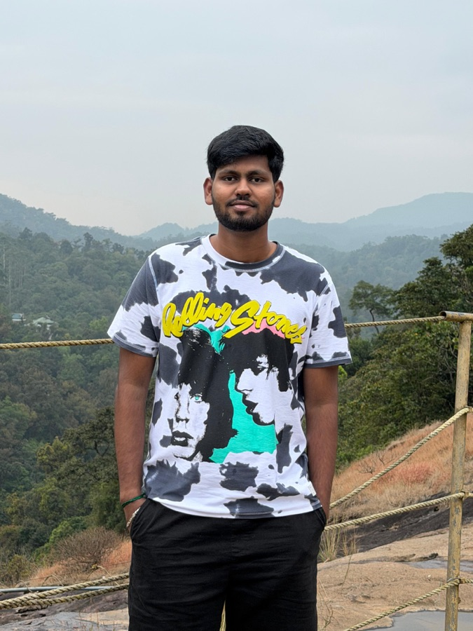
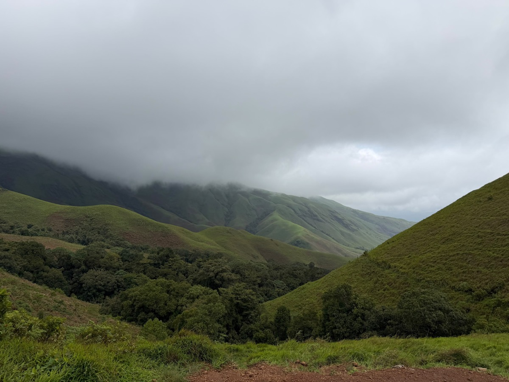

Reliable and efficient AI systems: trustworthy ML, edge learning, streaming algorithms
Studied
B.E. CSE, College of Engineering Guindy, Anna University, 2025
Off hours
Monsoon treks in the Western Ghats, slow travel
I'm a software engineer at Walmart Global Tech, where I build and run the backend systems that process Walmart's payment settlement transactions. Day to day that means backend infrastructure and payments reliability, and I also develop GenAI and agentic AI systems.
Outside work I do machine learning research, mostly on two questions: how to tell when a model's output can be trusted, and how to make learning work when memory and energy are tight.
Research
Keywords
hallucination detection
evaluation
vision-language models
continual learning
graph sparsification
sketching
learning-augmented algorithms
Most of my projects start with an assumption that a standard method quietly depends on.
I test what happens when it fails, then build something small that holds up without it: a hallucination detector that is judged fairly, a sketch that is robust to stream order, a regularizer that still works on tiny models.
Trustworthy ML. Hallucination detection in vision-language models and LLMs, and evaluations that measure what they claim to.
Efficient and edge ML. Continual learning and graph sparsification for memory-limited hardware.
Streaming and learning-augmented algorithms. Order-robust sketches, and algorithms that use learned predictions without trusting them blindly.
Current work
At a glance
3vision-language models, from two families
9,025scored objects, from 1,000 COCO images per model
84AUROC from token position alone, before any control
4.4 GBof features and hidden states released, with 41 tests
When does a VLM's hidden state know an object isn't there?
LatentTokenGuard flags objects a vision-language model names but cannot see, using only its own hidden states: no training and no extra forward pass.
My first version looked strong on POPE, until I found it was mostly reading the model's yes/no answer, so I rebuilt the evaluation on free-form captions from three models.
Objects named late in a caption are hallucinated far more often, so every detector here is compared within position bins.
Figure 1. AUROC for flagging hallucinated objects, computed within caption-position bins so that position itself carries no signal (it falls to about 50).
Scores are cross-fitted over 1,000 COCO images per model. The trained probe is a supervised reference, not a training-free method.
Under that control it is the best single training-free detector on all three models, and level with or ahead of GLSim (NeurIPS 2025). A trained probe overtakes it once a few hundred labelled objects are available.
Oct 2026Released code, features and tests for the position-controlled LatentTokenGuard evaluation on three VLMs.
Oct 2026Invited by Vel Tech's School of Computing as resource person and judge for its day-long coding contest.
Sep 2026Our paper on stream order and HyperLogLog is out in Intelligent Data Analysis.
Aug 2026Presented our learning-augmented streaming MAX-CUT paper at ICCVBIC 2026 in Lalitpur, Nepal.
May 2026Presented spectral sparsification for GNN training in Apple MLX at ICCNCT 2026.
Publications
In numbers
10selected papers
7published or accepted, 3 under review
7with public code
Featured
LatentTokenGuard: Position-Controlled Evaluation of Training-Free Object Hallucination Detection in Vision-Language ModelsSunil Kumar SManuscript, 2026. An earlier version is under review at SN Computer Science.Caption position alone predicts hallucination; once it is controlled, a training-free hidden-state score is the strongest single training-free detector on three VLMs.codedata
Conference and journal papers
Catastrophic Rigidity in Capacity-Constrained Edge Continual Learning with Annealed EWCSunil Kumar S, Matan PACS/IEEE International Conference on Computer Systems and Applications (AICCSA), University of Sharjah, UAE, 2026acceptedOn sub-megabyte edge models, accuracy under EWC falls steadily as its regularization grows. Decaying it over tasks cuts that growth from O(T) to O(log T) and improves MobileNetV3-Small by 8.4% accuracy with 43.2% less forgetting, without replay.code
Hardware-Aware Spectral Sparsification for Efficient GNN Training under Memory ConstraintsSunil Kumar S, P. Mohamed Fathimal, Poonkodi MInternational Conference on Computer Networks and Inventive Communication Technologies (ICCNCT), 2026Deterministic spectral edge pruning, written in Apple MLX, stays within 2–3 points of the full graph at 30% sparsity on Cora and Citeseer, with lower variance than DropEdge.papercode
BeHaLLM: Benchmarking Hallucinations in Large Language Models — Metrics, Datasets, and Evaluation FrameworksSunil Kumar S, M. S. Karthika Devi, Vishva Pranav VICT Expressunder reviewA survey of how hallucination in LLMs is measured: the metrics, the datasets, and the evaluation frameworks built on them.
GreenSketch: Energy-Aware Order-Robust Cardinality Estimation for Sustainable Edge AnalyticsSunil Kumar S, P. Mohamed FathimalJournal of Engineering Researchunder reviewEnergy-aware HyperLogLog variants for edge streams: 18.6% less energy on Wikipedia pageviews at under 1% accuracy loss.code
Walmart Global Tech, Software Engineer II2025 – now
I own a payments-settlement pipeline handling 25M+ transactions a day across 20+ gateways, and I'm on call for Tier-0 payment systems in the US, Canada and Mexico. I also led the five-person team behind SparkMind, a knowledge-graph memory layer for AI agents now used by several teams.
Walmart Global Tech, Software Engineer InternJan – Jun 2025
Moved Sam's Club membership pipelines to a Medallion architecture on Spark, BigQuery and Databricks without downtime, and built the data-quality alerts that catch mismatches between its layers.
College of Engineering Guindy, Anna University2021 – 2025
B.E. in Computer Science and Engineering. GPA 9.21/10.
Teaching, talks and service
Invited resource person and judge, coding contest at Vel Tech's School of Computing, Chennai (Oct 2026).
Taught evening CS classes and first-year labs, and ran DSA and C++ bootcamps for non-CS students (2023–24).
Chairperson, Computer Science and Engineering Association, CEG (2024–25). Led the department's 800+ member student body, its national hackathon HackZ'24 and the Abacus'25 symposium.
Lead student organizer, IEEE WIECON (Dec 2024), responsible for the technical program across three days.
Volunteer with the National Service Scheme (2021–25), setting up libraries in rural government schools.
Honors
First place of 365 submissions, Walmart EBS Elevate GenAI Hackathon, 2025
Walmart Impact Award, 2025
11th of 2,336 submissions, Walmart Global Tech Everybody Hacks, 2026
Top 25, Walmart U.S. Omni Tech Hackathon, 2026
Walmart Making a Difference Award, 2025 and 2026; Employee of the Month, May 2026
First place, Starlight Coding Marathon (Abacus'24), 2024
Away from work

Trails so far
Kudremukh
Kodachadri
a new stretch of the Western Ghats every monsoon
Away from the screen I'm happiest in the mountains, especially the Western Ghats in the monsoon, when trails like Kudremukh and Kodachadri disappear into cloud.
I travel slowly when I can: meeting people, eating what the locals eat, and seeing how life works somewhere new.

The Western Ghats in the monsoon. Select a photo to see it larger.